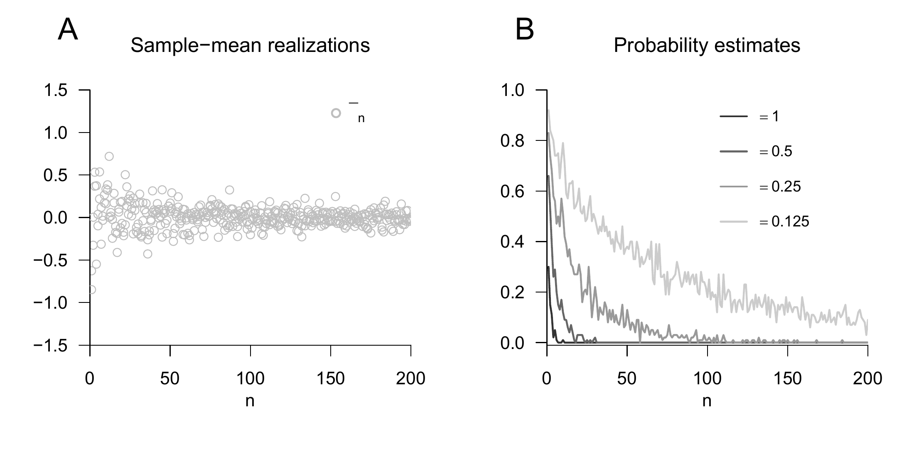
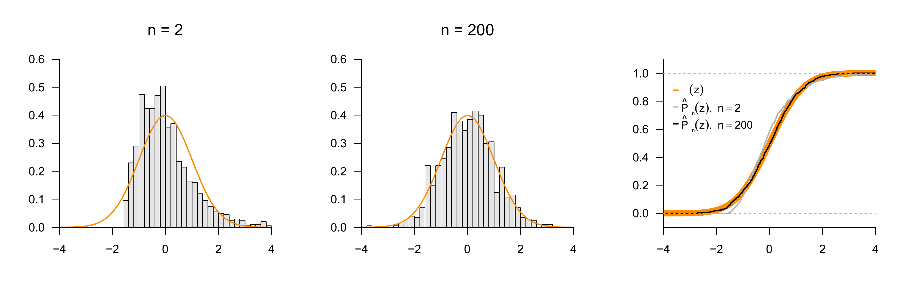

27 Limits
In this chapter, we consider limit statements for sequences of random variables that are fundamental for probabilistic modeling and data analysis. The laws of large numbers (Section 27.1) first provide a basic justification for taking means in probabilistic inference. The central limit theorems then justify the widespread use of normal distribution assumptions for unknown influences in probabilistic model formulation (Section 27.2). The mathematical depth of these limit statements cannot be exhausted in this introductory treatment, so we have to be content with numerous simplifications. Minimal prior knowledge about sequences of functions and their limit functions is provided by Chapter 5.
27.1 Laws of large numbers
There is a weak law of large numbers and a strong law of large numbers. Intuitively, both laws state that the sample mean of independent and identically distributed random variables approaches the expectation of the underlying distribution for a large number of random variables. The weak and strong laws of large numbers differ with respect to the forms of convergence of random variables used in their formulation. The weak law is based on convergence in probability. The strong law is based on almost sure convergence. Here we restrict ourselves to the concept of convergence in probability and thus to the weak law of large numbers.
Definition 27.1 (Convergence in probability) A sequence of random variables \(\xi_1,\xi_2,...\) converges to a random variable \(\xi\) in probability if, for every arbitrarily small \(\epsilon > 0\), \[\begin{equation} \lim_{n \to \infty} \mathbb{P}(|\xi_n - \xi| < \epsilon) = 1 \Leftrightarrow \lim_{n \to \infty} \mathbb{P}(|\xi_n - \xi| \ge \epsilon) = 0. \end{equation}\] The convergence of \(\xi_1,\xi_2,....\) to \(\xi\) in probability is written as \[\begin{equation} \xi_n\xrightarrow[n \to \infty]{\mbox{P}} \xi. \end{equation}\]
Thus, \(\xi_n\xrightarrow[n \to \infty]{\text{P}} \xi\) means that the probability that \(\xi_n\) lies in the random interval \[\begin{equation} ]\xi-\epsilon, \xi+\epsilon[ \end{equation}\] approaches \(1\) as \(n\) tends to infinity, no matter how small this interval may be. Intuitively, for \(n \to \infty\) and a constant random variable \(\xi := a\), this means that the distribution of \(\xi_n\) concentrates more and more around \(a\) as \(n\) tends to infinity. Using convergence in probability, the weak law of large numbers is formulated as follows.
Theorem 27.1 (Weak law of large numbers) Let \(\xi_1,...,\xi_n\) be independent and identically distributed random variables with \(\mathbb{E}(\xi_i) = \mu\) for all \(i = 1,...,n\). Furthermore, let \[\begin{equation} \bar{\xi}_n := \frac{1}{n}\sum_{i=1}^n \xi_i \end{equation}\] denote the sample mean of the \(\xi_i, i = 1,...,n\). Then \(\bar{\xi}_n\) converges in probability to \(\mu\), \[\begin{equation} \bar{\xi}_n \xrightarrow[n \to \infty]{\mbox{P}} \mu. \end{equation}\]
Proof. By Theorem 23.2, we first have \[\begin{equation} \mathbb{E}\left(\bar{\xi}_n\right) = \mathbb{E}\left(\frac{1}{n}\sum_{i=1}^n \xi_i\right) = \frac{1}{n}\sum_{i=1}^n \mathbb{E}\left(\xi_i\right) = \frac{1}{n} n \mathbb{E}\left(\xi_i\right) = \mathbb{E}\left(\xi_i\right) = \mu. \end{equation}\] The expectation \(\mu\) of the \(i\)th sample variable \(\xi_i\) therefore agrees with the expectation of the sample mean \(\bar{\xi}_n\). Furthermore, by Theorem 25.6 and Theorem 25.8, independence of the random variables implies \[\begin{equation} \mathbb{V}\left(\bar{\xi}_n\right) = \mathbb{V}\left(\frac{1}{n}\sum_{i=1}^n \xi_i\right) = \frac{1}{n^2}\sum_{i=1}^n \mathbb{V}\left(\xi_i\right) = \frac{1}{n^2}n\mathbb{V}\left(\xi_i\right) = \frac{\mathbb{V}\left(\xi_i\right)}{n}. \end{equation}\] The variance of the sample mean is therefore obtained by dividing the variance of the \(i\)th sample variable by \(n\). By Theorem 26.2, \[\begin{equation} \mathbb{P}(|\bar{\xi}_n - \mathbb{E}\left(\bar{\xi}_n\right)| \ge \epsilon) \le \frac{\mathbb{V}\left(\bar{\xi}_n\right)}{\epsilon^2} = \frac{\mathbb{V}\left(\xi_i\right)}{n\epsilon^2}. \end{equation}\] For arbitrary \(\mathbb{V}\left(\xi_i\right)\ge 0\) and \(\epsilon > 0\), and by the nonnegativity of probabilities, we therefore have \[\begin{equation} \lim_{n \to \infty} \mathbb{P}(|\bar{\xi}_n - \mathbb{E}\left(\bar{\xi}_n\right)| \ge \epsilon) \le \lim_{n \to \infty} \frac{\mathbb{V}\left(\xi_i\right)}{n\epsilon^2} \Leftrightarrow \lim_{n \to \infty} \mathbb{P}(|\bar{\xi}_n - \mu| \ge \epsilon) \le 0 \Leftrightarrow \lim_{n \to \infty} \mathbb{P}(|\bar{\xi}_n - \mu| \ge \epsilon) = 0, \end{equation}\] which proves the result.
Intuitively, \[\begin{equation} \bar{\xi}_n \xrightarrow[n\to\infty]{\mbox{P}} \mu \end{equation}\] means that the probability that the sample mean lies close to the expectation of the underlying distribution approaches \(1\) as \(n\) tends to infinity.
Example 27.1 (Simulation of the weak law of large numbers) To illustrate Theorem 27.1, we consider the case of i.i.d. normally distributed random variables \(\xi_1,...,\xi_n \sim N(0,1)\). Figure 27.1 A shows realizations of sample means \(\bar{\xi}_n\) as a function of \(n\). One can see that, for larger \(n\), more realizations of \(\bar{\xi}_n\) lie near the expectation of the \(\xi_i, i = 1,...,n\). Based on these sample-mean realizations, Figure 27.1 B shows estimates of the probability \(\mathbb{P}(|\bar{\xi}_n - \mu| \ge \epsilon)\) as functions of \(n\) and \(\epsilon\). For a large \(\epsilon\), a small \(n\) is sufficient to make the probability of an absolute deviation of the sample mean from the expectation small. For a smaller \(\epsilon\), a larger \(n\) is needed. In any case, however, the deviation probabilities decrease as \(n\) increases.

27.2 Central limit theorems
The central limit theorems state, intuitively, that the sum of independent random variables with expectation zero is asymptotically, that is, for infinitely many random variables, normally distributed with expectation parameter zero. Thus, if one models an arbitrary measurement quantity \(y\) as the sum of a deterministic influence \(\mu\) and the sum \[\begin{equation} \varepsilon := \sum_{i=1}^n \xi_i \end{equation}\] of a large number of independent random variables \(\xi_i, i = 1,...,n\), intended to model unknown influences, then for large \(n\) the assumption \[ y = \mu + \varepsilon \mbox{ with } \varepsilon \sim N(0,\sigma^2) \tag{27.1}\] is mathematically justified. As we will see later, the assumption in Equation 27.1 underlies a large number of probabilistic models.
Formally, different forms of central limit theorems are distinguished depending on the exact underlying assumptions and their proofs. In the so-called Lindeberg and Levy form of the central limit theorem, independent and identically distributed random variables are assumed. In the Liapunov form, by contrast, only independent random variables are assumed. In both formulations of the central limit theorem, the considered convergence of random variables is convergence in distribution, which we introduce first.
Definition 27.2 (Convergence in distribution) A sequence \(\xi_1,\xi_2,...\) of random variables converges in distribution to a random variable \(\xi\) if \[\begin{equation} \lim_{n \to \infty} P_{\xi_n}(x) = P_\xi(x) \end{equation}\] for all \(x\) at which \(P_\xi\) is continuous. The convergence in distribution of \(\xi_1,\xi_2,...\) to \(\xi\) is written as \[\begin{equation} \xi_n\xrightarrow[n\to \infty]{\text{D}} \xi. \end{equation}\] If \(\xi_n\xrightarrow[n\to \infty]{\text{D}} \xi\), then the distribution of \(\xi\) is called the asymptotic distribution of the sequence \(\xi_1,\xi_2,...\).
Convergence in distribution is therefore a statement about the convergence of sequences of functions, specifically of CDFs. Without proof, we note that convergence in probability, considered above, implies convergence in distribution. We now first state the central limit theorem of Lindeberg and Levy. For a proof, we refer to Henze (2024).
Theorem 27.2 (Central limit theorem of Lindeberg and Levy) Let \(\xi_1,...,\xi_n\) be independent and identically distributed random variables with \[\begin{equation} \mathbb{E}(\xi_i) := \mu \mbox{ and } \mathbb{V}(\xi_i) := \sigma^2 > 0 \mbox{ for all } i = 1,....,n. \end{equation}\] Furthermore, let \(\zeta_n\) be the random variable defined as \[\begin{equation} \zeta_n := \sqrt{n}\left(\frac{\bar{\xi}_n - \mu}{\sigma}\right). \end{equation}\] Then, for all \(z \in \mathbb{R}\), \[\begin{equation} \lim_{n \to \infty} P_{\zeta_n}(z) = \Phi(z), \end{equation}\] where \(\Phi\) denotes the cumulative distribution function of the standard normal distribution.
We show later that, for \(n\to\infty\), this also implies \[ \sum_{i=1}^n \xi_i \sim N(\mu, n\sigma^2) \mbox{ and } \bar{\xi}_n \sim N\left(\mu,\frac{\sigma^2}{n}\right). \tag{27.2}\]
Example 27.2 (Simulation of the central limit theorem of Lindeberg and Levy) We consider the case of i.i.d. \(\chi^2\) random variables \(\xi_1,...,\xi_n \sim \chi^2(3)\). Evidently, the functional form of the \(\chi^2(3)\) distribution is quite different from the standard normal distribution; in particular, \(\chi^2\) random variables take only nonnegative values with nonzero probability (see Section 21.3). Nevertheless, their standardized sum asymptotically results in a normal distribution, as visualized in Figure 27.2. At the implementation level, we use the fact that for the \(\chi^2\) random variables \(\xi_i, i = 1,...,n\) with degrees-of-freedom parameter \(3\), \[\begin{equation} \mathbb{E}(\xi_i) = 3 \mbox{ and }\mathbb{V}(\xi_i) = 6. \end{equation}\] The panels in Figure 27.2 A show histogram estimates of the probability density of \[\begin{equation} \zeta_n := \sqrt{n}\left(\frac{\bar{\xi}_n - \mu}{\sigma}\right) \end{equation}\] based on 1000 realizations of \(\zeta_n\) for \(n = 2\) and \(n = 200\), together with the PDF of \(N(0,1)\). Evidently, the distribution of the realizations of \(\zeta_2\) is still very unlike the standard normal distribution, whereas the distribution of the realizations of \(\zeta_{200}\) already approaches the standard normal distribution. Figure 27.2 B shows the corresponding estimated CDFs, which are the objects addressed formally by Theorem 27.2.

The central limit theorem of Liapounov generalizes Theorem 27.2 to the case of random variables that need not be identically distributed. For a proof, we again refer to Henze (2024).
Theorem 27.3 (Central limit theorem of Liapounov) Let \(\xi_1,...,\xi_n\) be independent but not necessarily identically distributed random variables with \[\begin{equation} \mathbb{E}(\xi_i) := \mu_i \mbox{ and } \mathbb{V}(\xi_i) := \sigma^2_i > 0 \mbox{ for all } i = 1,....,n. \end{equation}\] Furthermore, suppose that \(\xi_1,...,\xi_n\) satisfy the following properties: \[\begin{equation} \mathbb{E}(|\xi_i - \mu_i|^3) < \infty \mbox{ and } \lim_{n \to \infty} \frac{\sum_{i=1}^n \mathbb{E}\left(|\xi_i - \mu_i|^3\right)}{(\sum_{i=1}^n \sigma_i^2)^{3/2}} = 0. \end{equation}\] Then, for the random variable \(\zeta_n\) defined as \[\begin{equation} \zeta_n := \frac{\sum_{i=1}^n \xi_i - \sum_{i=1}^n \mu_i}{\sqrt{\sum_{i=1}^n \sigma_i^2}}, \end{equation}\] and for all \(z\in\mathbb{R}\), \[\begin{equation} \lim_{n \to \infty} P_{\zeta_n}(z) = \Phi(z), \end{equation}\] where \(\Phi\) denotes the CDF of the standard normal distribution.
We show later that, for \(n\to\infty\), this also implies \[ \sum_{i=1}^n \xi_i \sim N\left(\sum_{i=1}^n \mu_i, \sum_{i=1}^n \sigma_i^2\right). \tag{27.3}\]
27.3 Bibliographic remarks
On the mathematical-historical genesis of the central limit theorems, see Fischer (2011) and Ulyanov (2024). On the Lindeberg-Levy central limit theorem, see Lindeberg (1922) and Lévy (1937); on the Liapunov central limit theorem, see Liapounoff (1900) and Liapounoff (1901).
Study questions
- State the weak law of large numbers.
- Explain the central limit theorem of Lindeberg and Levy.
- Why are central limit theorems important for probabilistic model building?
Study question answers
- See Theorem 27.1.
- The central limit theorem of Lindeberg and Levy states that the standardized sum of independent and identically distributed random variables is asymptotically normally distributed.
- The central limit theorems justify the frequent assumption of normally distributed unknown influences as disturbance, error, deviation, or uncertainty variables in probabilistic models.